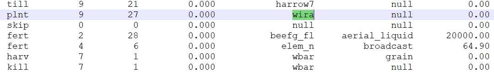

Second step focus on identification of any problems with the simulation of agricultural management operations.
1. Issues with scheduled and triggered management operations
report_mgt gives an overview of operations which differ
between the scheduled operations and the ones which were actually
triggered during the simulation run. If differences are identified they
must be further investigated. Identified differences must not
necessarily be an error, but can also result e.g. from operations which
are triggered by decision tables. A manual, visual investigation should
rule out these cases. In this example one issue was identified.
mgt_report <- report_mgt(sim_nostress)
if(!is.null(mgt_report)) {
rmarkdown::paged_table(mgt_report)
}2. Analize differences in management for an HRU
If the management report above flagged the management for an HRU to be different, the following code can help to look into the operations which were found different in the scheduled and triggered management.
##Select a case to examine
sel_nb <- 1
sel_mgt <- mgt_report[[sel_nb,"schedule"]]
print(paste("Table of issues for selected management", sel_mgt))## [1] "Table of issues for selected management field_129_10_mgt"
mgt_report$schedule_report[[sel_nb]]## year mon day op_typ op_data1_trig op_data1 op_data2 op_data3
## 1 2 7 1 harv <NA> wbar grain 0To analyze the full triggered management table for the same HRU how it was printed by the SWAT+ simulation run the following lines of code.
id <- get_hru_id_by_attribute(sim_nostress, mgt = sel_mgt)$id[1]
print(paste("HRU", id, "trigerred management table"))
print_triggered_mgt(sim_verify = sim_nostress, hru_id = id)## [1] "HRU 16 trigerred management table"We can also open ‘management.sch’ file to see the scheduled
management operations for the HRU. In this case the error is that
'wira' plant is planted, but 'wbar' is
harvested. This is a clear error in the management schedule.

To continue the analysis, please proceed to step 3.